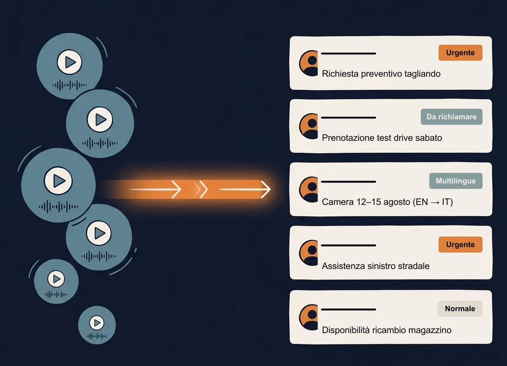

Concessionarie, officine, carrozzerie e ricambisti perdono ogni giorno lead di valore quando il telefono squilla a vuoto. La voicemail intelligente di Bintware è la prima linea di difesa contro la dispersione dei contatti — disponibile in due livelli, dal punto di ingresso al salto evolutivo, scelti dal cliente in base ai suoi numeri reali.

Nel mercato automotive italiano, dove la concorrenza è alta e il cliente ha alternative a pochi metri di distanza, la prima chiamata è quasi sempre una scelta fra concessionari, officine, carrozzerie. Chi non risponde subito, perde. Chi risponde male, perde lo stesso. La voicemail nasce per evitare il danno peggiore: che la traccia di un cliente potenziale vada perduta nel silenzio.
Una concessionaria di medie dimensioni riceve dalle 80 alle 150 chiamate al giorno. Tra picchi di lunedì mattina, pause pranzo e fuori orario, la quota di chiamate che restano senza risposta oscilla tipicamente fra il 20% e il 40%. Ogni chiamata non gestita è un lead potenziale che chiama il concorrente di fronte.
La sera, il fine settimana, i festivi: chi cerca un'officina dopo un guasto stradale, chi confronta concessionari in pausa cena, chi prenota un test drive durante una serata libera, chiama in fasce in cui l'ufficio è chiuso. Senza voicemail, quella chiamata è semplicemente persa.
Il front-office o il meccanico che risponde mentre lavora gestisce un mix di chiamate dove il 60-70% potrebbe essere asincrono (richieste di preventivo, info, prenotazioni). Senza filtro intelligente, ogni squillo è un'interruzione del flusso operativo.
Il titolare che la sera ha lo squillo del cellulare e non riesce a staccare, che gestisce personalmente le emergenze fuori orario, che arriva al lunedì già esausto. Pain umano oltre che economico.
Le quattro capability che lavorano in background su ogni messaggio che arriva al sistema. Sono le stesse per entrambi i piani: cambia solo se il messaggio viene raccolto in modalità asincrona (Piano A) o gestito durante una conversazione realtime (Piano B).
Il sistema ascolta il messaggio vocale e lo trascrive in testo immediatamente leggibile. Pulisce rumore di fondo, normalizza pause e false partenze, restituisce un testo coerente che il referente legge in dieci secondi anziché ascoltare per due minuti.
Dal testo trascritto vengono estratti automaticamente i campi rilevanti — nome del chiamante, numero, motivo della chiamata, livello di urgenza, eventuale modello di auto o servizio richiesto (tagliando, preventivo, sinistro, ricambio). Un discorso destrutturato diventa un ticket pre-compilato pronto da gestire.
Tramite API dedicate il sistema dialoga col centralino aziendale o col CRM esistente. Sa in tempo reale se un cliente che ha lasciato un messaggio è stato effettivamente richiamato da un operatore, e da chi. Niente ticket dimenticati nel cassetto, niente dispersione fra reparti.
Tutti i dati alimentano un report automatico (HTML, dashboard o export). Il titolare e il responsabile di filiale vedono in tempo reale: chiamate ricevute, distribuzione per categoria, tempi di reazione (SLA), performance dei commerciali, chiamate ancora da richiamare. Statistiche inequivocabili su cui prendere decisioni.
L'AI non sostituisce il personale: gli toglie dal piatto il lavoro di trascrizione e smistamento, così il tempo umano resta sui clienti.
Il nostro modello economico non applica alcuna tassa per postazione utente: si basa su 1 Slot Cloud dedicato su Google Cloud (regione di Milano, 190,00 € / mese, fino a 7.560 min/mese) più i minuti del piano scelto. E con un impegno minimo di 6 mesi, il contributo di attivazione standard (200 € per il Piano A, 600 € per il Piano B) è interamente azzerato a 0,00 €.
Il Piano A — Voicemail analisi asincrona (Linea 2) è il punto di ingresso. È pensato per chi vuole avvicinarsi all'AI senza ribaltare il proprio centralino o cambiare l'esperienza di chi chiama: il chiamante sente una segreteria normale, e in pochi secondi il sistema trascrive il messaggio, estrae i campi strutturati e prepara il ticket. La tariffa in Piano Flat è di 0,045 € / min (più eventuale indicizzazione semantica a +0,020 € / min): ad esempio, uno scenario chiavi in mano da 500 min/mese costa 212,50 € / mese (190,00 € di Slot Cloud + 22,50 € di minuti; 222,50 € / mese con indicizzazione semantica).
Il Piano B — Voicemail conversazionale realtime (Linea 1) è il salto evolutivo. Quando i volumi crescono, quando i picchi non si gestiscono più con un richiamo entro un'ora, l'AI risponde dal primo squillo anche in ambienti rumorosi, dialoga col chiamante nel rispetto delle regole di business, conferma appuntamenti e prequalifica. La tariffa AI in Piano Flat parte da 0,362 € / min (profilo Solo Voce Base) e arriva a 0,502 € / min nella Suite Completa Consigliata (che include Voce Realtime + Trascrizione + Report Analitico AI + Ricerca Semantica + Dashboard Essential per 3 utenti): sommando lo Slot Cloud da 190,00 € / mese, uno scenario chiavi in mano da 500 min/mese in Suite Completa costa 441,00 € / mese (con soli +70,00 €/mese di differenza rispetto al Solo Voce Base a 371,00 €/mese).
| Piano A · Voicemail analisi (Linea 2) | Piano B · Voicemail realtime (Linea 1) | |
|---|---|---|
| Cosa fa quando il telefono squilla | Il chiamante lascia un messaggio come a una segreteria normale. L'AI elabora l'audio in pochi secondi. | L'AI risponde dal primo squillo con dialogo contestuale guidato dalle regole aziendali, conferma appuntamenti e prequalifica. |
| Cosa cambia per chi chiama | Niente di percepibile: sente una voce umana di benvenuto e lascia il messaggio. Esperienza familiare. | Risposta immediata in linguaggio naturale, anche se chiama da un'officina o per strada grazie al filtro acustico anti-rumore. |
| Cosa cambia per voi | Ticket strutturato in email/dashboard, già categorizzato per priorità e tracciato col centralino. | Tutto del Piano A, in più: gestione diretta della richiesta in chiamata e riduzione drastica dell'abbandono nei picchi. |
| Struttura di costo (Flat) | Slot Cloud (190,00 €/mese) + 0,045 €/min (+0,020 €/min indicizzazione). Es. 500 min/mese: 212,50 €/mese. Setup standard 200 € (0 € con 6 mesi). | Slot Cloud (190,00 €/mese) + da 0,362 €/min (Solo Voce) a 0,502 €/min (Suite Completa con Dashboard Essential inclusa). Es. 500 min/mese Suite Completa: 441,00 €/mese. Setup standard 600 € (0 € con 6 mesi). |
| Quando ha senso | Volumi medi, picchi gestibili, cultura conservativa rispetto all'AI, urgenze gestibili in callback entro 1-2 ore. | Volumi alti o picchi frequenti, urgenze immediate (sinistro, recall stagionali), apertura culturale al dialogo con AI. |
| Si può passare da A a B (o usarli insieme)? | Sì, in qualunque momento, oppure combinare entrambi nella Linea 3 · Offerta Combinata (es. 500 min Voce Suite Completa + 500 min Trascrizione a 653,50 € / mese in Flat). | |
Una nota onesta sui costi: tutti gli scenari indicati sono in Euro (IVA esclusa) per configurazioni standard, soggetti a verifica tecnica e suscettibili di modifiche sul caso reale. Nella valutazione gratuita di 30 minuti analizziamo insieme i vostri volumi e calcoliamo lo scenario esatto.
Il focus primario nei primi 12 mesi è il mondo automotive in tutte le sue declinazioni. Ognuna di queste realtà ha pattern di chiamata diversi, ma lo stesso pain di fondo: chiamate perse che diventano clienti regalati al concorrente.
Vendite, prenotazione test drive, info modelli, gestione listini. Picchi su lancio nuovi modelli, fine campagne fiscali, weekend di apertura. Il Piano B è particolarmente forte qui: il prospect che chiama per un test drive non aspetta volentieri.
Appuntamenti, preventivi, ricambi, urgenze stradali. Il meccanico spesso risponde mentre lavora. Il Piano A toglie il rumore delle chiamate non urgenti; il Piano B copre H24 le emergenze stradali.
Chiamate di sinistro, preventivi, gestione tempi di consegna, dialogo con periti assicurativi. Le chiamate di sinistro tipicamente non sopportano callback lunghi: chi ha appena tamponato vuole rassicurazione subito.
Chiamate da officine clienti per disponibilità pezzi, ordini urgenti. Il Piano A spesso basta: le richieste sono asincrone per natura, ma vanno strutturate e categorizzate correttamente per essere evase rapidamente.
Trascrizioni delle chiamate, ticket strutturati, report direzionali e statistiche di richiamo non restano in una console isolata. Sono accessibili in ogni momento dalle interfacce Bintware, da qualunque dispositivo. Tutto resta nel perimetro GDPR italiano: Google Cloud europe-west8 (Milano), niente trasferimenti extra-UE.
L'azienda accede ai dati da tre canali, a seconda del momento e del contesto. Sono interfacce diverse sullo stesso database, non sistemi separati: il responsabile vendite controlla la pipeline dei richiami dalla console web in ufficio, il titolare riceve un riepilogo notturno sull'app desktop, il responsabile after-sales consulta lo storico di un cliente dalla mobile mentre è in officina.
Tutti i canali rispettano le stesse regole di accesso — autenticazione, profili autorizzativi distinti per titolare, responsabile, segreteria, log degli accessi conservati per le esigenze di audit GDPR.
Interfaccia primaria di gestione, accessibile da qualunque browser senza installazione. Pensata per l'uso operativo durante la giornata in azienda.
Applicativo nativo per uso intensivo: ricerca veloce sull'archivio, esportazioni, riepiloghi giornalieri. Per chi lavora ogni giorno con flussi strutturati.
Per consultazioni in mobilità. Controllare lo storico di un cliente dal piazzale, rivedere un ticket prima di un richiamo, autorizzare letture rapide a un collega.
Il listino si basa sulla capacità effettiva (1 Slot Cloud dedicato da 190,00 € / mese + i minuti del piano scelto), senza alcun canone per singola postazione dipendente. Qui trovi i riferimenti principali (IVA esclusa, per configurazioni standard); in homepage trovi la tabella completa di tutte le taglie di volume.
Nei Piani Flat scegli in anticipo cosa succede se superi i minuti mensili: Opzione A (Blocco Automatico a Soglia «Zero Sorprese») per non spendere mai un euro oltre il budget concordato, oppure Opzione B (Continuità Operativa H24 con Switch Automatico a Consumo) per non perdere nessuna chiamata nei picchi (con i soli minuti extra tariffati a consumo: 0,653 €/min Voce Suite Completa, 0,060 €/min Trascrizione).
Nota di riserva: tutti i prezzi indicati sono esempi indicativi in Euro (IVA esclusa) per configurazioni standard, soggetti a verifica tecnica e suscettibili di modifiche. Eventuali integrazioni con DMS proprietari o sviluppi custom fuori standard vengono quotati a progetto.
Vedi il listino completo con tutte le 4 linee e gli scenari in homepage →
La voicemail Bintware si innesta sul centralino esistente via SIP trunk standard. Nessuna sostituzione hardware, nessun cambio di operatore telefonico. Vale per entrambi i piani.
Compatibilità verificata con: 3CX, Wildix, NFON, FreePBX, Cisco, Avaya, Fastweb Business, TIM Business. Per centralini meno comuni, l'integrazione si valuta in fase di setup (è quasi sempre possibile, raramente significa SIP trunk a parte).
Il referente IT del cliente trova in fase di proposta una scheda tecnica dedicata con dettagli su: protocolli, codec audio, requisiti di rete, modello di data residency UE (Google Cloud `europe-west8`, Milano), conformità GDPR e modello DPA standard.
europe-west8 (datacenter di Milano). Data residency UE garantita per architettura, non per policy: i dati non escono dall'Unione Europea. Conformità GDPR, conservazione configurabile, modello DPA (Data Processing Agreement) standard fornito alla firma del contratto.Una conversazione gratuita per analizzare insieme i numeri della vostra azienda — chiamate al giorno, picchi, fuori orario, tempi di richiamo — e decidere se ha più senso partire dal Piano A o dal Piano B. Risponde un founder, non un commerciale: niente qualifica, si parla del problema.
Prenota la valutazione gratuita